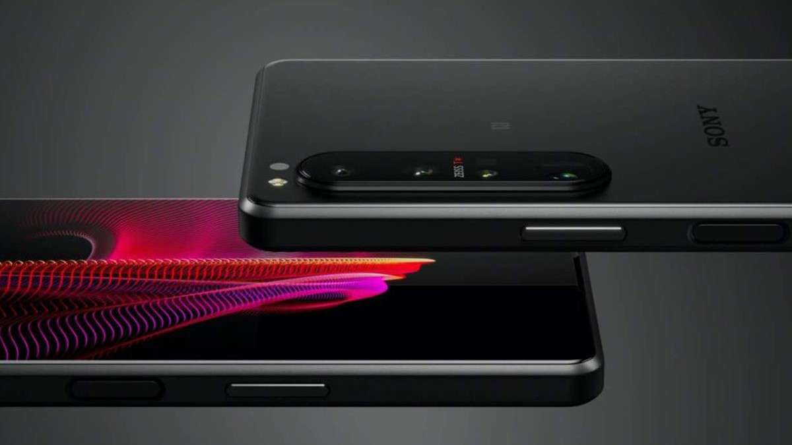

Lo UltimoLa Invicta Electric Opai, su velocidad de 45km/h y su autonomía de 70km se coloca como una de las motos eléctricas más baratasOnePlus Nord 2: fecha de lanzamiento confirmada, precio, especificaciones, noticias y filtracionesNvidia Canvas te permite convertir garabatos digitales en casi fotografíasNokia sube el listón con los Noise Cancelling Earbuds: sus primeros auriculares inalámbricos con cancelación de ruido activaSony Xperia 1 III, primeras impresiones y toma de contacto
